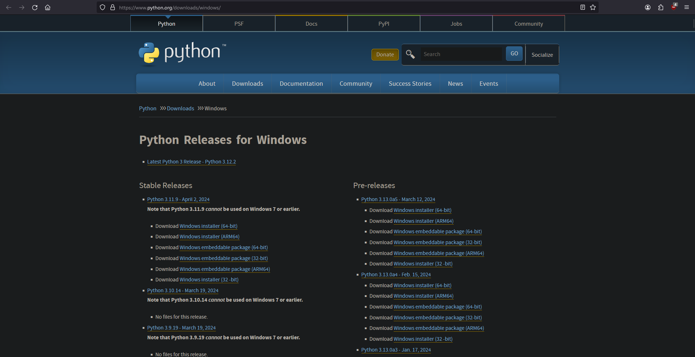
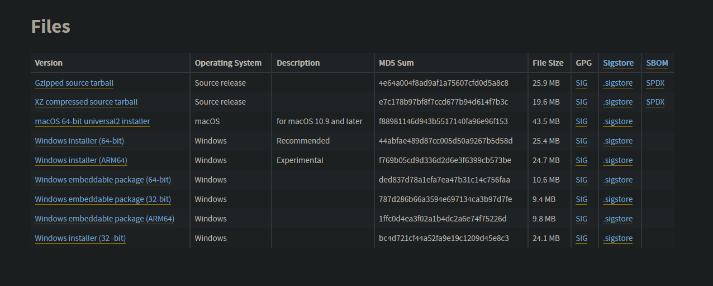
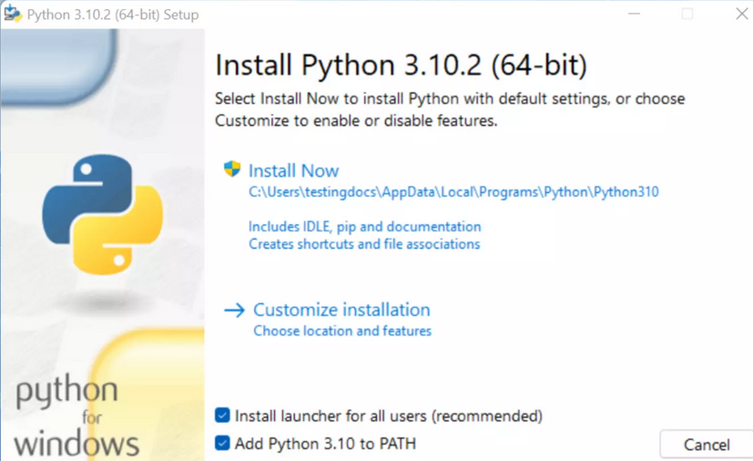
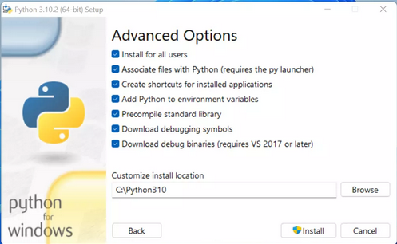

How to install Python on Windows
Hey, Today i will be teaching you how to install Python on Windows
What is Python?
Python is a programming language developed in 1991 by Guido van Rossum.
How to install Python
Step 1
Open you webbrowser and navigate to https://www.python.org/downloads/windows/

Step 2
Click on the "Latest Python 3 Release - Python 3.12.2" Link
Step 3
Scroll down to the Files Section
Step 4
Click on the "Windows installer (64-bit)"
Step 5
Run the downloaded file.
Credits to TestingDocs.com
Step 6
Select the options you want then click the Install button.
Credits to TestingDocs.com